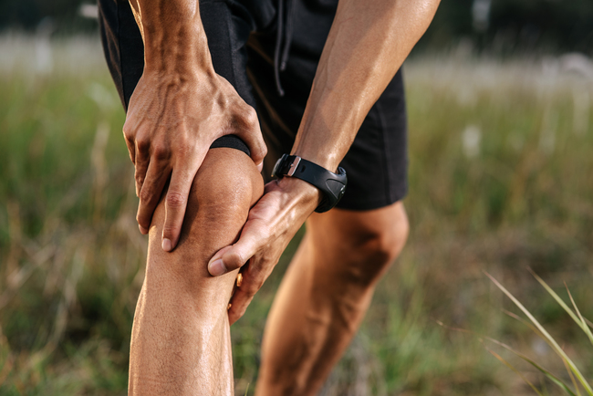

A osteogênese imperfeita, também conhecida como "ossos de vidro", é uma condição genética rara que afeta a produção de colágeno, uma proteína essencial para a estruturação dos ossos e tecidos conjuntivos. Essa condição resulta em ossos frágeis e quebradiços, predispondo os indivíduos afetados a fraturas frequentes, mesmo com lesões leves ou sem motivo aparente.
Complicações:
•Deformidades ósseas, como pernas arqueadas, braços e pernas curtas, e coluna vertebral curvada.
•Crescimento ósseo lento.
•Fragilidade dentária, com dentes quebradiços e propensão a cáries.
•Problemas respiratórios, devido à fraqueza dos ossos da caixa torácica.
•Problemas de audição, devido a deformidades nos ossos do ouvido médio.
Este é o tipo mais moderada da doença. O paciente apresenta pouca incidência de fraturas e deformidades.
O tipo II da patologia é fatal no período perinatal, uma vez que causa diversas fraturas antes e depois do parto, além da formação de deformidades graves.
Tipo grave da doença. Pacientes acometidos por essa condição da Osteogênese imperfeita têm baixa estatura, várias fraturas e deformidades, face triangular e problemas no desenvolvimento dentário.
Neste caso, o paciente apresenta gravidade variável e manifestações clínicas diversas.
Os ossos são frágeis e quebradiços, o que leva a fraturas frequentes. Essas fraturas podem ocorrer com lesões mínimas, movimentos bruscos ou até mesmo sem motivo aparente.
Em casos graves, a osteogênese imperfeita pode causar deformidades ósseas, como pernas arqueadas, braços e pernas curtas, e curvatura da coluna vertebral (escoliose).
Muitas pessoas com osteogênese imperfeita têm estatura abaixo da média devido ao crescimento ósseo comprometido.
Os dentes podem ser frágeis e quebradiços, o que aumenta o risco de cáries, perda dentária e outras complicações dentárias.
A fragilidade dos ossos da caixa torácica pode levar a problemas respiratórios, como dificuldade para respirar e infecções respiratórias frequentes.
Deformidades nos ossos do ouvido médio podem afetar a audição, levando a perda auditiva ou outros problemas auditivos.
Algumas pessoas com osteogênese imperfeita podem apresentar articulações hiperextensíveis, o que significa que elas se estendem além do normal. Isso pode aumentar o risco de lesões articulares e problemas de estabilidade.
Alguns medicamentos podem ser prescritos para aumentar a densidade mineral óssea e reduzir o risco de fraturas. Isso pode incluir bisfosfonatos, que ajudam a retardar a perda óssea, e teriparatida, que estimula a formação óssea.
A fisioterapia é frequentemente recomendada para fortalecer os músculos e melhorar a mobilidade. Exercícios de fortalecimento, alongamento e equilíbrio podem ajudar a prevenir quedas e lesões.
Órteses, como talas ou aparelhos ortopédicos, podem ser usadas para fornecer suporte adicional aos ossos e articulações, reduzir o risco de fraturas e melhorar a função motora.
Em casos graves de deformidades ósseas ou fraturas recorrentes, a cirurgia ortopédica pode ser necessária para corrigir a estrutura óssea, estabilizar as articulações ou implantar hastes intramedulares para fortalecer os ossos longos.
O tratamento odontológico é importante para cuidar da fragilidade dentária associada à OI. Isso pode incluir obturações, tratamento de canal, extrações dentárias e uso de próteses dentárias.
Me chamo Maria Yara, tenho 17 anos e sou portadora da Osteogênese Imperfeita. No meu dia a dia, é um pouco complicado, pois não posso fazer muitas coisas, principalmente no meio escolar. Logo, a maioria das coisas que eu faço tem que ser acompanhada, e para mim isso é um pouco difícil de lidar, pois quando saio acompanhada, as pessoas ficam me olhando com olhar de julgamento. Já escutei várias pessoas dizendo que é frescura dos meus pais, porque eles só andam segurando na minha mão, mas a maioria das pessoas não entende como é complicado viver assim. Na escola, as atividades físicas eu não faço, pois, por ordens médicas, não foram autorizadas, então eu só fico observando os outros alunos fazendo suas atividades enquanto fico sentada. Participo de oficinas que às vezes a escola oferece e que eu possa fazer, por exemplo, a oficina de crochê, pinturas e outras. Eu espero que esse meu relato possa incentivar outras pessoas a se abrirem e contarem sua realidade, para que possamos nos ajudar.
O diagnóstico de osteogênese imperfeita veio assim que a carioca Thais Pessanha, 41 anos, nasceu.
Ir para o artigoConsiderada rara, a síndrome não tem cura, mas tem tratamento.
Ir para o artigoVitoria, de 11 anos, mora há pouco mais de oito anos em Boston, nos Estados Unidos.
Ir para o artigo